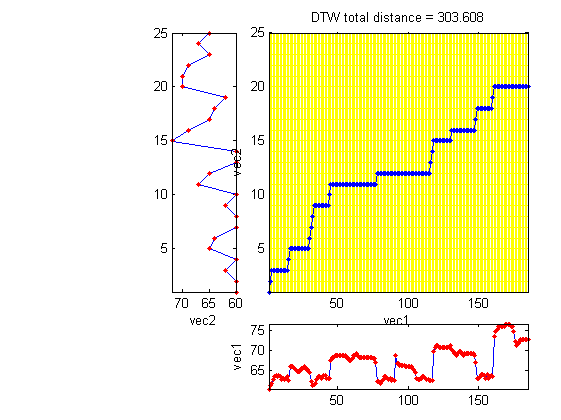
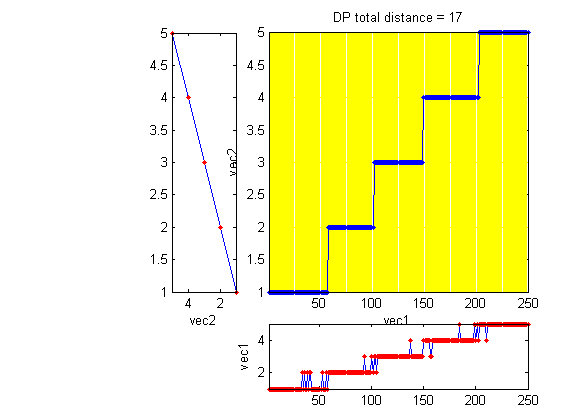
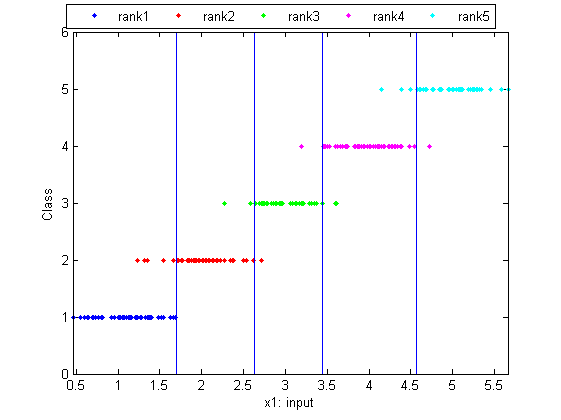

dtw3
DTW (dynamic time warping) with local paths of 0 and 45 degrees
Contents
Syntax
- minDist = dtw3(vec1, vec2)
- minDist = dtw3(vec1, vec2, beginCorner, endCorner)
- minDist = dtw3(vec1, vec2, beginCorner, endCorner, plotOpt)
- minDist = dtw3(vec1, vec2, beginCorner, endCorner, plotOpt, distanceBound)
- [minDist, dtwPath, dtwTable] = dtw3(...)
Description
dtw3(vec1, vec2, beginCorner, endCorner, plotOpt, distanceBound) returns the DTW distance between vec1 and vec2, assuming a local path constrains of 0 and 45 degrees.
- vec1: testing vector
- vec2: reference vector
- beginCorner: 1 for anchored beginning
- endCorner: 1 for anchored ending
- plotOpt: 1 for plotting the DTW path
- distanceBound: distance bound for stop the computation. (Stop the computation immediately if the accumulated DTW distance is larger than this distance bound.)
[minDist, dtwPath, dtwTable] = dtw3(...) also return two extra results:
- dtwPath: optimal path of DTW (Its size is 2xk, where k is the path length.)
- dtwTable: DTW table
Note that this function is called by dtw.
Example
This example aligns a singing pitch to a note sequence
pv=[47.485736 48.330408 48.917323 49.836778 50.478049 50.807818 50.478049 50.807818 50.478049 49.836778 50.154445 49.836778 50.154445 50.478049 49.524836 52.930351 52.930351 52.930351 52.558029 52.193545 51.836577 51.836577 51.836577 52.558029 52.558029 52.930351 52.558029 52.193545 51.836577 51.486821 49.218415 48.330408 48.621378 48.917323 49.836778 50.478049 50.478049 50.154445 50.478049 50.807818 50.807818 50.154445 50.154445 50.154445 54.505286 55.349958 55.349958 55.788268 55.788268 55.788268 55.788268 55.788268 55.788268 55.788268 55.788268 55.349958 55.349958 54.505286 54.505286 54.922471 55.788268 55.788268 56.237965 55.788268 55.349958 55.349958 55.349958 55.349958 55.349958 55.349958 55.349958 55.349958 55.349958 55.349958 54.922471 54.922471 54.097918 49.218415 49.218415 48.917323 49.218415 49.836778 50.478049 50.478049 50.154445 49.836778 50.154445 49.524836 49.836778 49.524836 55.788268 53.699915 53.699915 53.310858 53.310858 53.310858 53.310858 52.930351 52.930351 52.930351 52.930351 52.930351 52.558029 52.193545 51.486821 50.154445 49.836778 49.836778 50.154445 50.478049 50.478049 50.154445 49.836778 49.836778 49.524836 49.524836 49.524836 56.699654 57.661699 58.163541 58.163541 57.661699 57.661699 57.661699 57.661699 57.661699 57.661699 57.661699 57.661699 58.163541 57.173995 56.699654 56.237965 55.788268 56.237965 56.699654 56.699654 56.237965 55.788268 56.237965 56.237965 56.237965 56.237965 56.237965 56.237965 56.237965 55.788268 54.097918 50.154445 50.154445 50.478049 51.143991 51.143991 50.807818 50.154445 51.143991 50.154445 50.478049 50.807818 50.478049 60.330408 61.524836 62.154445 62.807818 62.807818 62.807818 62.807818 62.807818 63.486821 63.486821 63.486821 63.486821 62.807818 62.807818 61.524836 59.213095 58.163541 58.680365 59.213095 59.762739 59.762739 59.762739 59.762739 59.762739 59.762739]; note=[60 29 60 10 62 38 60 38 65 38 64 77 60 29 60 10 62 38 60 38 67 38 65 77 60 29 60 10 72 38 69 38 65 38 64 38 62 77 0 77 70 29 70 10 69 38 65 38 67 38 65 38]; pv=pv+13; notePitch=note(1:2:end); % Get pitch only notePitch(notePitch==0)=[]; % Get rid of rests [minDist, dtwPath] = dtw3(pv, notePitch, 1, 0); dtwPathPlot(pv, notePitch, dtwPath, 'square');
This example performs quantization over output of a discriminant function for learning to rank
DS=prData('ltr1d'); % 1D dataset for learning to rank (LTR) [minDist, dtwPath] = dtw3(DS.output, min(DS.output):max(DS.output), 1, 1); figure; dtwPathPlot(DS.output, min(DS.output):max(DS.output), dtwPath, 'square'); title(['DP total distance = ', num2str(minDist)]);
Plot the dataset and the cut points for LTR
index=find(diff(dtwPath(2,:))); cutPoints=(DS.input(index)+DS.input(index+1))/2; figure; dsProjPlot1(DS); minY=min(DS.output)-1; maxY=max(DS.output)+1; axis([-inf inf minY maxY]); for i=1:length(cutPoints) line(cutPoints(i)*[1 1], [minY, maxY]); end
Re-evaluate to create the squared errors
for i=1:length(DS.output) computed(i)=find(diff(DS.input(i)<[-inf cutPoints inf])); end squareError=sum((DS.output-computed).^2)
squareError =
17